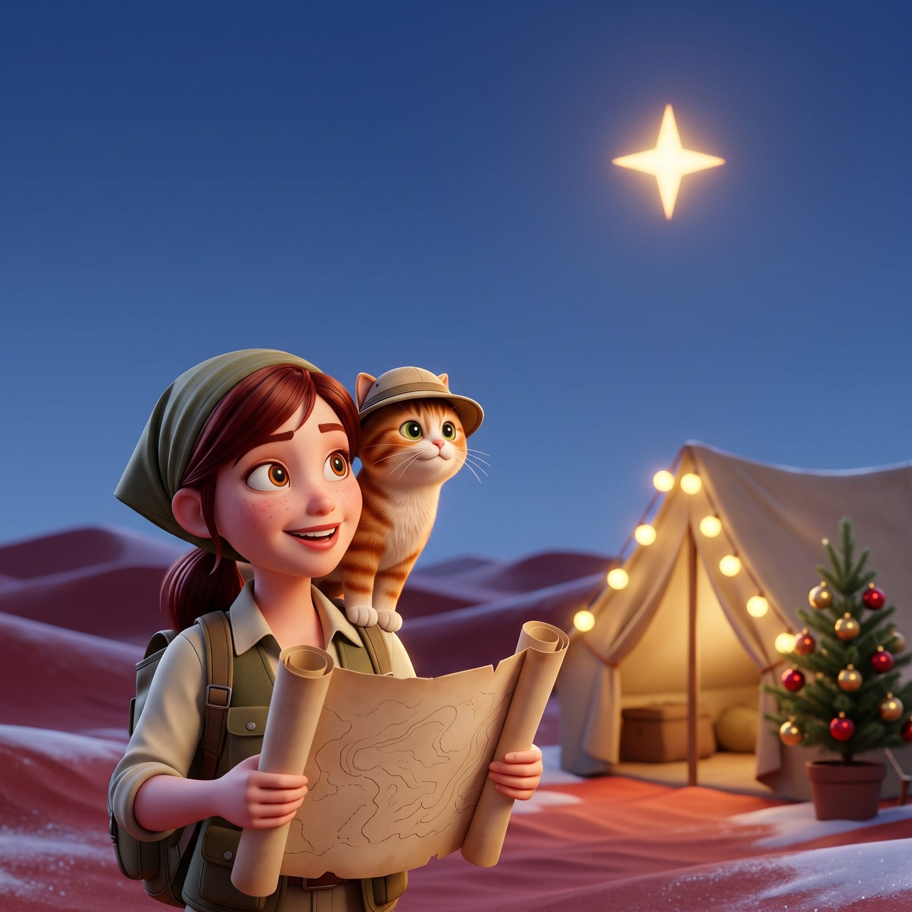

Explorers, grab your warmest scarf 🧭
A sandstorm scattered my Christmas things all over the desert. Twenty of them: my compass, my cocoa mug, a very offended nutcracker. On Christmas Day I'll need your help to find them.
Every explorer gets their own six and their own map. Same desert, different dunes. The diary opens in three chapters, at 11 AM, 3 PM and 7 PM ET, and each find gets a little harder. Drop a pin, and if you're right, you get a stamp in your Expedition Passport.
Saffron, my small, ginger and very smug cat, is hiding in the dunes too. He only talks in the Watchers chat. Find him and you get a paw print. It counts as a stamp.
On December 26 your finds lead to the North Star Oasis. And if you found everything, the Golden Compass is waiting. One explorer who finds it wins 50 SC.
3 stamps, 6 stamps and the oasis each unlock a code with FP, GC and SC. No race: everything stays open until 11:59 PM ET on Dec 26.
📍 Grab your passport on the map page. Practice page is open today.
No purchase necessary. 21+. US only. Full rules on the map page.
